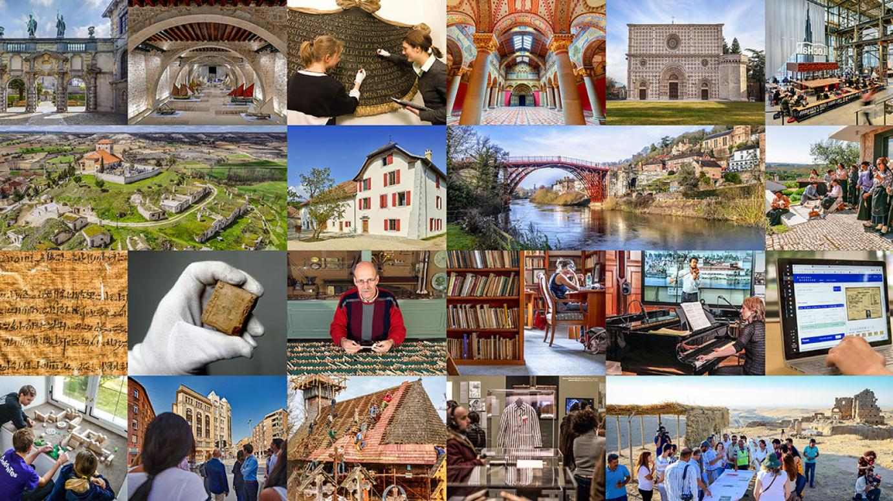

Europe

European culture is a tapestry woven with a multitude of traditions, languages, histories, and artistic expressions. It encompasses the diverse heritage of countries across the continent, shaped by ancient civilizations, medieval kingdoms, colonialism, and intellectual movements.
European societies often prioritize individualism, personal freedoms, and democratic principles. Family values, cultural heritage, and the arts play significant roles in shaping European identity.
Art and Literature:
Europe has a rich artistic tradition, with renowned painters, sculptors, and architects leaving their mark on the cultural landscape. From Renaissance masterpieces to contemporary art movements, European art and literature have had a profound impact on global creativity.
Music:
European music is diverse and influential, ranging from classical compositions by composers like Bach, Mozart, and Beethoven to modern genres like rock, pop, and electronic music. European countries have vibrant music scenes with distinct styles and contributions.
Cuisine:
European cuisine is renowned worldwide for its diversity and quality. Each country offers its own unique culinary delights, from French haute cuisine to Italian pasta, Spanish tapas, German sausages, and British fish and chips. European food culture emphasizes fresh ingredients, traditional recipes, and regional specialties.
Architecture:
Europe is known for its architectural marvels, ranging from ancient structures like the Colosseum and the Parthenon to medieval cathedrals and modern landmarks. Gothic, Renaissance, Baroque, and Neoclassical styles have all left their mark on European cities and landscapes.
History and Heritage:
Europe is steeped in history and is home to numerous UNESCO World Heritage sites. From ancient ruins to castles, palaces, and historical landmarks, Europe offers a wealth of cultural heritage for exploration and appreciation.
Literature and Philosophy:
European literature and philosophy have shaped intellectual discourse for centuries. From the works of Shakespeare, Dante, and Goethe to the philosophical ideas of Plato, Kant, and Nietzsche, European thinkers have made profound contributions to the fields of literature, philosophy, and social sciences.
Festivals and Celebrations:
Europeans celebrate a variety of festivals and traditions throughout the year. From colorful carnivals to religious holidays, music festivals, and cultural events, these celebrations showcase the diversity and vibrancy of European culture.